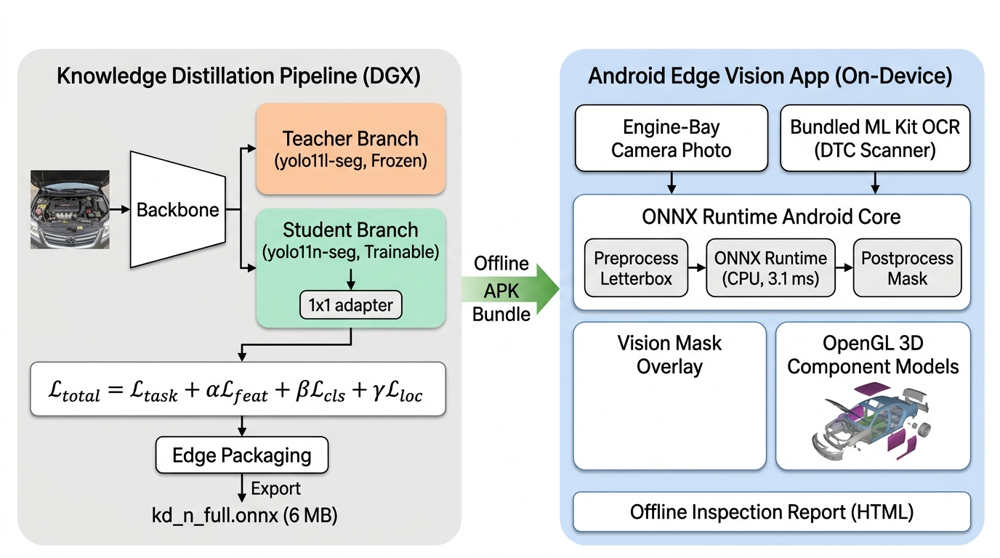
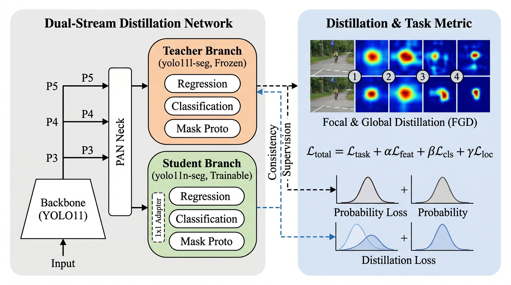

Thiết kế trực quan hệ thống chưng cất tri thức (Knowledge Distillation) từ máy chủ DGX và quy trình triển khai ứng dụng Android ngoại tuyến (100% On-Device), tuân thủ ngôn ngữ trực quan bài báo khoa học YOLOv10.


| Kích thước | 56 MB (27.6 triệu tham số) |
|---|---|
| Độ trễ DGX | 9.2 ms (batch size 1) |
| Độ chính xác | mask mAP50-95 = 0.354 (trên xe mới) |
| Backbone/Neck | 256–512 kênh (C3k2, SPPF, C2PSA) |
| Nhiệm vụ KD | Cung cấp soft logits, DFL variance, attention map |
| Kích thước | 6 MB (2.84 triệu tham số · gọn gấp 10 lần) |
|---|---|
| Độ trễ DGX | 3.1 ms (4.0 ms toàn bộ pipeline) |
| Độ chính xác | mask mAP50-95 = 0.302 (thu hẹp 85% khoảng cách) |
| Feature Adapter | 1×1 Conv khớp kênh P3/P4/P5 với Teacher |
| Gradient flow | Chỉ cập nhật Student + Adapter; Teacher giữ nguyên |